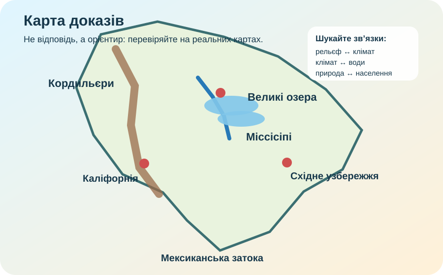

1. Ідентифікація
Робота заблокована до заповнення всіх трьох полів.
2. Карта доказів

Схема — лише орієнтир. Для просторових відповідей користуйтеся реальною картою.
Підсумкова діагностика без «вивчи десять фактів і забудь». Тут треба читати карту, зіставляти дані й пояснювати причинно-наслідкові зв’язки між положенням, рельєфом, кліматом, водами, природними зонами та населенням.
Робота заблокована до заповнення всіх трьох полів.

Схема — лише орієнтир. Для просторових відповідей користуйтеся реальною картою.